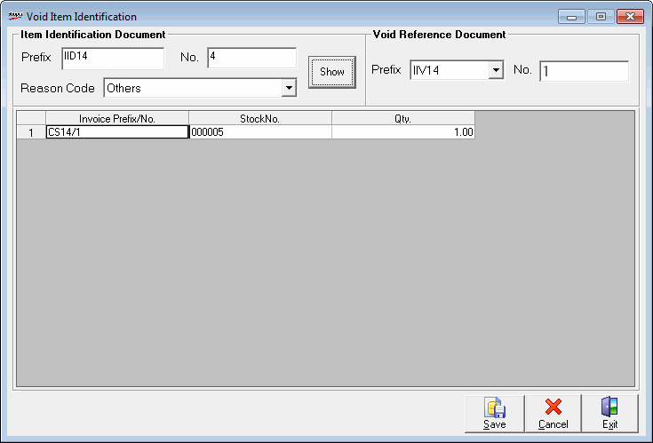

The Void Item Identification window is displayed.

Item Identification Document
Prefix and No.: Enter the Prefix and No. of the document to be voided.
Reason Code: Select the appropriate reason code.
Show: Click to display the items for cancellation.
Void Reference Document
Prefix and No.: The fields, Prefix and No. are populated automatically with details.